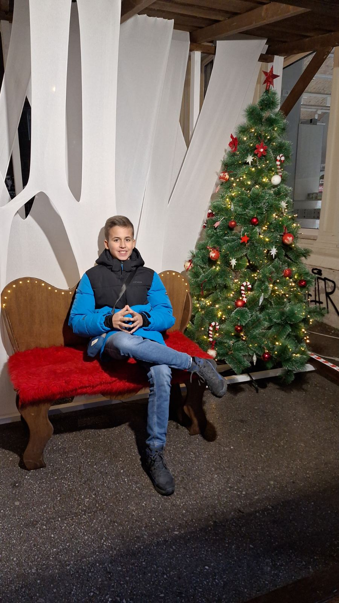

Boris Josipović
Manager
The strategic mind behind CodeMatrix. Responsible for team coordination, project vision, and ensuring that our users get the best possible experience.

The strategic mind behind CodeMatrix. Responsible for team coordination, project vision, and ensuring that our users get the best possible experience.